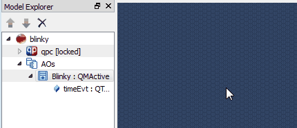
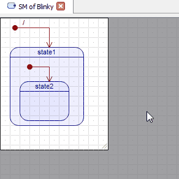
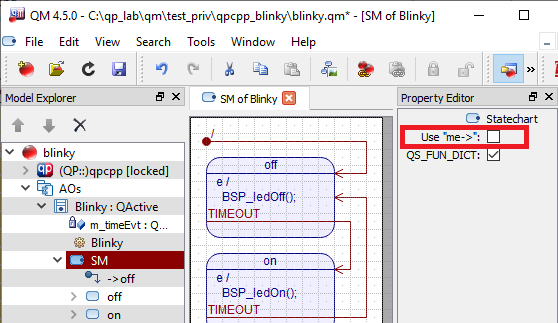

Adding a Statechart
In the Model Explorer right-click on the Class to which you want to add the state machine and select Add State Machine from the popup menu.

Adding a State Machine to a Class
- Note
- The menu option is only available if a given class directly or indirectly inherits the QP class QHsm. Otherwise the option is "grayed-out".
Resizing a State Machine Diagram
As shown in the screen shot below, you can easily resize the Drawing Canvas of a State Diagram by dragging its right or bottom edges, or by dragging the resize handle in the bottom-right corner of the canvas. In each case the mouse cursor indicates the possible direction of resizing.

Resizing the Drawing Canvas
Statechart Property Sheet
Statechart item can be configured by the Statechart-Specific Property Sheet.

Statechart Property Sheet
The statechart-item property sheet contains the following properties:
Use "me->"
Checkbox that controls the state machine implementation style. When checked, the old **use me-> pointer" style is applied. If unchecked (recommended), the new **no me-> pointer" style is used. Please refer to the QP/C++ documentation of this feature.
- Note
- The "Use me->" checkbox is only relevant for models based on QP/C++ (qpcpp). For models based on QP/C or QP-nano, this checkbox is permanently checked and is "grayed-out" meaning that it cannot be unchecked.
QS_FUN_DICT
Checkbox that turns on/off the automatic generation of the QS_FUN_DICTIONARY() macros for all states of a given statechart. The dictionary macros are generated in the top-most initial transition of the statechart. Below is an example of generated code with the QS_FUN_DICTIONARY() macros:
static QState Calc_initial(Calc * const me, QEvt const * const e) {
static struct {
QMState const *target;
QActionHandler act[3];
} const tatbl_ = {
&Calc_on_s,
{
Q_ACTION_CAST(&Calc_on_e),
Q_ACTION_CAST(&Calc_on_i),
Q_ACTION_CAST(0)
}
};
BSP_clear();
(void)e;
me->his_operand1 = &Calc_operand_neg_s;
me->his_operand2 = &Calc_operand_neg_s;
me->his_test = &Calc_state1_s;
QS_FUN_DICTIONARY(&Calc_on);
QS_FUN_DICTIONARY(&Calc_ready);
QS_FUN_DICTIONARY(&Calc_result);
QS_FUN_DICTIONARY(&Calc_begin);
QS_FUN_DICTIONARY(&Calc_operand1);
QS_FUN_DICTIONARY(&Calc_opEntered);
QS_FUN_DICTIONARY(&Calc_error);
QS_FUN_DICTIONARY(&Calc_operand2);
QS_FUN_DICTIONARY(&Calc_test);
QS_FUN_DICTIONARY(&Calc_state1);
QS_FUN_DICTIONARY(&Calc_final);
QS_FUN_DICTIONARY(&Calc_operand_zero);
QS_FUN_DICTIONARY(&Calc_operand_intgr);
QS_FUN_DICTIONARY(&Calc_operand_frac);
QS_FUN_DICTIONARY(&Calc_operand_neg);
return QM_TRAN_INIT(&tatbl_);
}
Next: Working with States